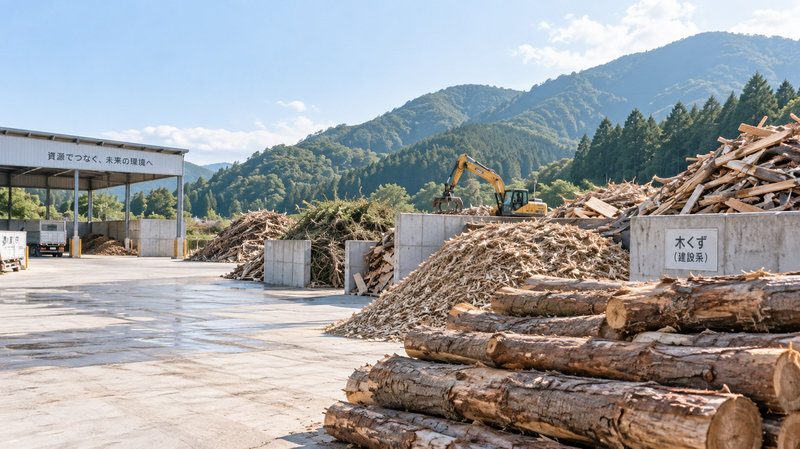
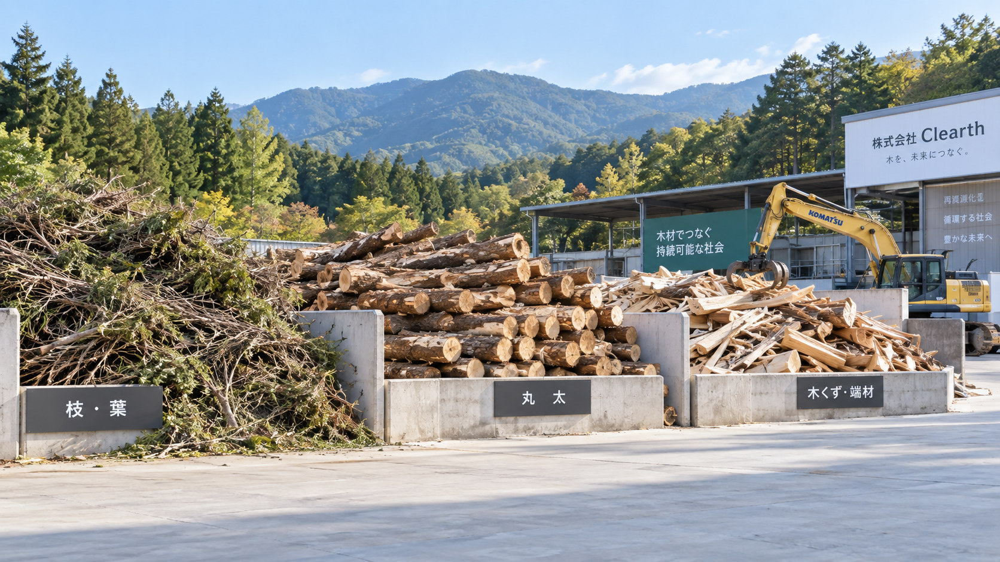

05 WOOD WASTE DISPOSAL
OUR BUSINESS / SERVICE 05
木材廃棄物処分
木くずを適切に処理し、
資源へつなぐ。
木材廃棄物の適正処理から資源化まで一貫対応します。
ABOUT SERVICE
木材廃棄物処分について
木材廃棄物処分とは、建設現場や解体現場、工場、事業所などの事業活動から発生する木くずを、状態や量に応じて適正に受け入れ・処理することです。建設・解体工事で発生した木材、製造工程の木くず、不要になったパレットや梱包材などが対象となります。
Clearthでは、受け入れた木材廃棄物のうち資源として有効活用できるものを破砕し、木質チップとして再資源化します。木くず処分から木材リサイクルまで一貫して対応し、廃棄物の削減につなげます。
なお、山林から搬出した間伐材・未利用材は「廃棄物」ではなく、大切な森林資源です。木材廃棄物とは区分し、森林資源としての活用をご相談いただけます。
ACCEPTED MATERIALS
受け入れ対象
発生場所、木材の状態、量、混入物の有無を事前に確認し、受入可否と搬入方法をご案内します。
対象となる木材廃棄物
- 建設・解体工事などから発生した木材廃棄物
- 工場や事業所の製造・加工工程で発生した木くず
- 不要になった木製パレット
- 木製の梱包材
- 事業活動で不要になった木製資材
金属、プラスチック、石膏ボード、土砂、薬剤などが付着・混入している場合は、受け入れできないことがあります。実際の受入条件は木材の加工状態、付着物・混入物、寸法、搬入量によって異なるため、持ち込む前に木材の種類と状態をお知らせください。
WHY CLEARTH
Clearthの木材廃棄物処分
適正な受け入れと処理を基本に、木材廃棄物を資源として活かすところまで一貫して対応します。
- 01
適正処理
木材の発生場所、状態、混入物、量を確認し、受入条件に沿って適正に処理します。
- 02
分かりやすい受入案内
事前に必要な情報を確認し、受入可否や搬入方法、搬入可能な日時を分かりやすくご案内します。
- 03
大量受入にも対応
建設・解体現場や工場などからまとまって発生する木くずも、量と搬入予定を確認して受入方法を調整します。
- 04
木質チップとして再資源化
資源として有効活用できる木材廃棄物は木質チップ化し、木材リサイクルにつなげます。木材を可能な限り再資源化することで、廃棄物の削減と木質資源の循環に貢献します。

WOOD TO RESOURCE
受け入れた木材を、
次の資源へ。
木材廃棄物の種類や状態を確認し、受入条件に沿って適正に処理します。資源として有効活用できるものは破砕し、木質チップとして再資源化します。
- 受入内容の確認
- 搬入
- 適正処理
- 木質チップ化・資源化
FLOW
ご相談から処理完了まで
木材の種類や状態、量を事前に確認し、受入可否と搬入方法をご案内します。
- 01お問い合わせ
- 02受入内容の確認
- 03搬入
- 04適正処理
- 05木質チップ化・資源化
FOR YOU / WHO IT HELPS
こんなことでお困りではありませんか？
建設・解体現場や事業所などから発生した木くずについて、ご相談を承ります。
- 大量の木くずを処分したい
- 解体現場で木材が発生した
- 継続的に処理を依頼したい
- 木材廃棄物の処理先を探している
- 適正処理できる会社を探している
FAQ
木材廃棄物処分のよくある質問
受け入れできる木材、搬入量、受入時間、お見積もりについて、よくいただくご質問をまとめました。
どのような木材が持ち込めますか？
建設・解体現場から発生した木材廃棄物、工場や事業所の木くず、木製パレット、梱包材、木製資材などが対象です。加工状態や付着物・混入物によって受入可否が異なるため、搬入前に木材の種類と状態をお知らせください。
少量でも対応できますか？
少量の木材廃棄物も、種類や状態を確認したうえで受け入れを検討します。量にかかわらず、持ち込む前に一度ご相談ください。
大量搬入は可能ですか？
はい。大量の木くずにも対応しています。安全で円滑に受け入れるため、木材の種類、数量、車両、希望日時を事前に確認し、搬入方法をご案内します。
受入時間は？
受入時間は搬入先や時期によって異なる場合があります。ご希望の搬入日と時間をお知らせいただければ、受入可能な日時をご案内します。
見積もりは無料ですか？
はい。お見積もりは無料です。木材廃棄物の種類、状態、量、混入物の有無、搬入頻度などを確認したうえで費用をご案内します。
BEFORE DELIVERY
搬入前に受入内容をご確認ください
木材の種類、発生場所、量、おおよその寸法、付着物・混入物の有無、希望する搬入日時をお知らせください。
木材の状態が分かる写真があると、受入可否や確認事項を整理しやすくなります。写真はメールにてお送りいただけます。お問い合わせフォームからのご相談も可能です。
内容を確認したうえで、受入可否、搬入方法、搬入可能な日時、お見積もりをご案内します。
受入条件は木材の状態や混入物によって異なります。木材を持ち込む前に、必ずご連絡ください。
CONTACT
木材廃棄物処分について、まずは発生状況をお聞かせください。
建設・解体現場、工場、事業所などから発生した木くずについて、種類、状態、量、搬入頻度を確認し、受入方法と木材リサイクルの流れをご案内します。
対応エリア
廿日市市を拠点に、広島県内を中心として木材廃棄物処分のご相談に対応しています。近隣県からの搬入についても、まずはお問い合わせください。
お見積もりは無料です。適正処理から木質チップ化による再資源化まで、まとめてご相談いただけます。